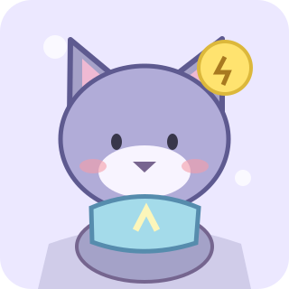

나도 몰랐던 나의 모습을 발견해요!
우리 반
나의 성향 찾기
20가지 상황을 읽고 나에게 가장 가까운 답을 골라 보세요. 어떤 모습이든 모두 소중해요!
⏰ 약 5~7분✅ 정답·오답 없음🧡 4가지 성향

※ 이 활동은 재미있는 자기 이해 활동이며 심리검사나 친구 관계의 정답이 아닙니다.
나도 몰랐던 나의 모습을 발견해요!
20가지 상황을 읽고 나에게 가장 가까운 답을 골라 보세요. 어떤 모습이든 모두 소중해요!

※ 이 활동은 재미있는 자기 이해 활동이며 심리검사나 친구 관계의 정답이 아닙니다.